Ljud
Ljud är en longitudinell våg vilket innebär att störning är parallell (i någon mening) med vågens utbredningsriktning. Ljudvågor innebär att mediets (luften t ex) molekyler rör sig runt sitt jämviktslägeoch på det sättet fortplantar en våg.
Om vi låter s vara denna förskjutning från varje atoms jämviktsläge, så innebär det att störningen kommer att ha dimensionen längd dvs mätas i m.
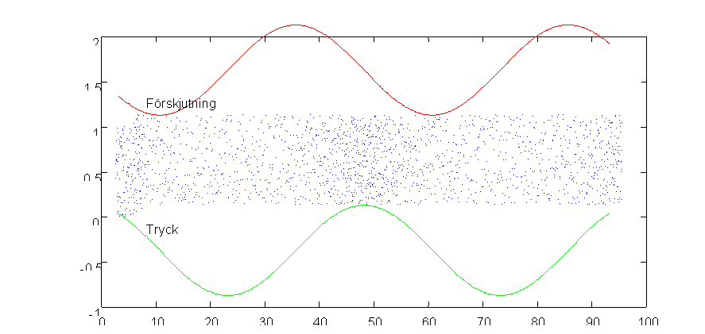
En bra bild av sitautionen får man av ovanstående figur. Vi ser förtätningar och förtunningar i (de blå) atomerna. Trycket blir som väntat störst i förtätningar och minst i förtunningar. Vad man kanske måste tänka över en sekund är att förskjutningen har nollställe i tryckmax och tryckmin. Detta är emellertid inte så konstigt. Betraktar man den atom som ligger i ett tryckmax, så har ju hans närmaste granne framåt förskjutits bakåt mot honom, och den närmast bakom honom har förskjutits framåt (det är ju därför det är ett tryckmax).
Vill man studera förtätningarna i detalj finns det en
liten matlab snutt . Lek med amplituden i denna.Om vi utgår från förskjutningen 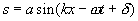så ser vi att vi måste kunna få partiklarnas hastighet genom att derivera denna m a p tiden. Denna hastighet (som måste skiljas från störningens hastighet c, som är något helt annat) ges då av
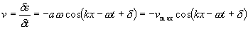
Vidare skulle vi behöva ett samband mellan tryckstörningen och förskjutningen. Denna ges av
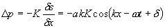 där K är en materialkonstant som kallas gasens kompressionsmodul. Härledning till detta har vi gömt i en fördjupning.
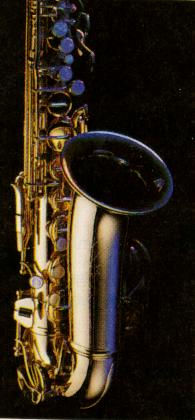Ett annat samband som också är viktigt mellan K och vågen hastighet c. Denna kan vi komma fram till mha
vågekvationen från förra avsnittet. Det visar sig att vågekvationen är en direkt följd av Newtons gamla goding: F=ma vilket leder till 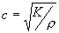En likadan härledning för en tråd (=fjäder i mekaniken) med fjäderkonstant k och längd l
leder till att ljudhastigheten i tråden kan skrivas: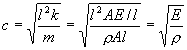 där vi i mellan ledet uttryckt k i materialets elasticitetsmodul, E, och massan i densitet och volym.
Tryckamplitud och förskjutning i all ära, men det är inte i termer av dessa man normalt uttrycker en ljudupplevelse. Nästa steg måste vara att få ett uttryck för ljudets intensitet, I, (effekt/yta) relaterat till de storheter vi nu tittat på, för att därifrån gå vidare mot decibelskalan.
Om vi även i detta fall tänker oss ljud som utbreder sig i ett rör med tvärsnittsytan A och betraktar en liten snutt som svänger fram och tillbaka i takt med partiklarna kommer effekten på denna att ges av kraften på den gånger hastigheten. Därefter drar vi oss till minnes att tryck ju var kraft per yta (definition på tryck).
Alltså får vi:

Nu använder vi att 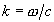och 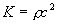enligt ovan och bildar samtidigt medelvärdet av cos2-funktionen, vilket är 1/2 (eller hur???). Vi får då:
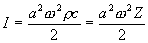
|
Medium |
Z (kg/m2s) |
|
luft |
420 |
|
vatten |
1460000 |
|
aluminium |
18000000 |
|
stål |
47000000 |
|
glas |
14000000 |
där vi i sista ledet infört Z, den akustiska impedansen,
r c, som är en så vanlig kombination av storheter att den fått ett eget namn.Z varierar kraftigt mellan olika material som vi kan se från tabellen här intill.
Av uttrycket för intensiteten kan man vidare se varför bas och diskanthögtalare i allmänhet är olika stora och vilken som bör vara störst.
De flesta vet svaret, men vad har det för samband med uttrycket?
(!!!)En praktisk observation är att det för människan hörbara ljudet varierar inom mycket vida gränser. Den lägsta intensitet en normalhörande människa kan höra ligger runt 10-12W/m2 medan den intensitet vid vilken ljudet blir fysiskt smärtsamt ligger vid 1W/m2. För att göra detta lite mer lätthanterligt (men samtidigt röra till begreppen för alla människor som inte kan logaritmer) har vi valt att i tekniska sammanhang ange ljudintensitet i en logaritmisk skala, baserat på den lägsta hörbara intensiteten I0=10-12W/m2. Denna logaritmiska storhet har enheten dB och brukar kallas ljudintensitetsnivå,
b , och definieras: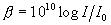
Denna definition innebär att smärtgränsen kommer att ligga på
??? dBoch att den minsta hörbara intensiteten kommer att motsvara
!!!!!!!! dB�och slutligen:
Hur många dB ökar b om I fördubblas
???Slutligen bjuder vi på ett uttryck för vad som händer då ljud faller in mot en gränsyta mellan två medier med olika akustisk impedans. Det visar sig att vid vinkelrätt infall är den andel som reflekteras
 därmed blir den andel som transmitteras= 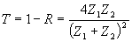
därmed blir den andel som transmitteras= 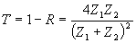
Vi ser att ju mer lika medierna är i Z desto större andel transmitteras. Om skillnaden är mycket stor (som exvis mellan luft och vatten eller mellan luft och ett fast material kan man försumma Z för luft i nämnaren ich transmittansen går mot 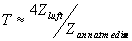. Vi ser att endast enstaka promille går igenom en luft/vattenyta, dvs ljudintensitetsnivån sjunker med XXX dB.
Till nästa sida (Interferens och ljud) )
Till nästa kapitel (Geometrisk optik)